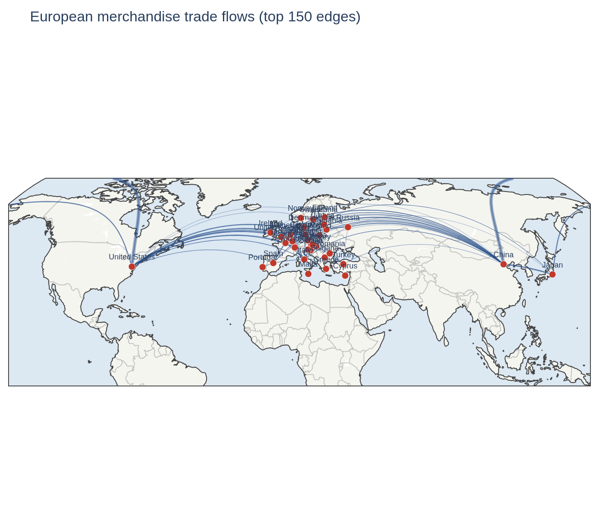

European Trade Network
Centrality, communities, and resilience — CEPII BACI
Which economies hold European trade together, do coherent blocs emerge from the flow structure, and how much of Europe’s trade survives losing its biggest hubs? This project models countries as nodes and directed, weighted trade flows as edges across the EU-27 and eight major partners — 35 economies, 9,755 bn USD of merchandise trade in 2022 — with Austria as a running reference point.

One fact shapes every result below: the network is complete. All 35 economies trade directly with all others, so density is 1.0 and there is no missing link to find. The structure that matters is not which connections exist, but how lopsidedly value sits on them.
How to read this site. Data & method is the single place for the source and modelling choices — the analysis pages assume it. The five Analysis entries in the sidebar are the notebooks themselves, executed end to end: every number and figure is produced by the (folded) code on the page. The interactive network is the community partition as a graph you can pull apart.
What the analysis found
RQ1 — Germany holds the network together, and Austria bridges nothing. Weighted betweenness is extraordinarily concentrated: Germany scores 0.829 against China’s 0.191, even though China exports more (1,654 bn vs 1,354 bn USD). China is a source; Germany is a hub. Only 15 of 35 economies have positive betweenness at all, because on a complete graph most pairs already trade directly. Austria sits among the twenty zeros — 17th by export strength, 13th by PageRank, a mid-tier economy whose largest partner is Germany in both directions. → 02 · Centrality
RQ2 — Three blocs emerge, drawn by geography rather than treaty. Weighted Louvain on the significant-trade backbone finds 3 communities at modularity Q = 0.25: a German-anchored continental core, a Nordic-Baltic cluster, and an extra-European partner bloc. The EU-27 does not form a bloc — it splits across all three. Non-members Switzerland and Norway sit inside their neighbouring EU clusters, while EU-member Ireland defects to the US-led group, its exports dominated by US-linked pharma and tech. → 03 · Communities · interactive view
RQ3 — Connectivity never breaks; value breaks almost immediately. The complete graph has no articulation point, so it cannot fragment. On the backbone it can: betweenness-targeted removal breaks it after 34% of economies (12 of 35), export targeting after 40%, against 89% under random failure — roughly 2.6× more tolerant of accidents than of a hit list. Value is the real fragility. Losing three economies (China, Germany, the USA — 9% of nodes) halves total trade value, where random failure needs ten. Germany alone carries 27%. → 04 · Resilience
RQ4 — Energy is 12% of the value and a structurally different market. The top three energy exporters (Russia, Norway, the USA) carry 55% of energy exports against 38% for merchandise overall — a Herfindahl index of 0.124 vs 0.075, meaning 8 effective suppliers instead of 13. The leadership changes hands completely, because manufacturing hubs cannot sell resources they do not have. Austria is 12th by energy exports and a net importer, its exports being re-exports and transit (53% electricity). Electricity is also the bridge to the sibling project austria-energy-analysis, which measures the same Austrian flows hourly from ENTSO-E. → 05 · Energy subnetwork
Three takeaways
This network has no structural weak point — it has a value weak point. Every economy trades directly with every other, so nothing fragments by cutting links. But three economies carry half the value. Resilience policy that adds redundant connections is solving a problem this network does not have; diversifying volume away from the top handful of partners is the only lever that moves the number.
Trade blocs are drawn by geography and intensity, not by treaty. The EU-27 splits across all three detected communities, non-members sit inside EU clusters, and an EU member defects to the US-led bloc. To predict who trades with whom, distance and volume beat membership.
Position and size are different things, and energy proves it twice. Germany out-bridges China on a quarter of its export volume, and Greece and Lithuania reach the betweenness top ten on 37 bn USD of exports each. In energy the ranking inverts entirely: resource exporters replace manufacturing hubs, concentration nearly doubles, and Austria rises five places on exports it does not produce but merely routes.